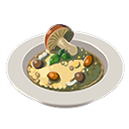

Mushroom Risotto

Description:
"The tantalizing aroma of mushrooms and butter beckons you to the table," - Inventory, Breath of the Wild
Ingredients
- Hearty Truffle (or any mushroom you can find)
- Hylian Rice
- Goat Butter
Rock Salt
Steps
- Gather the ingredients
- Throw them in the cooking pot!